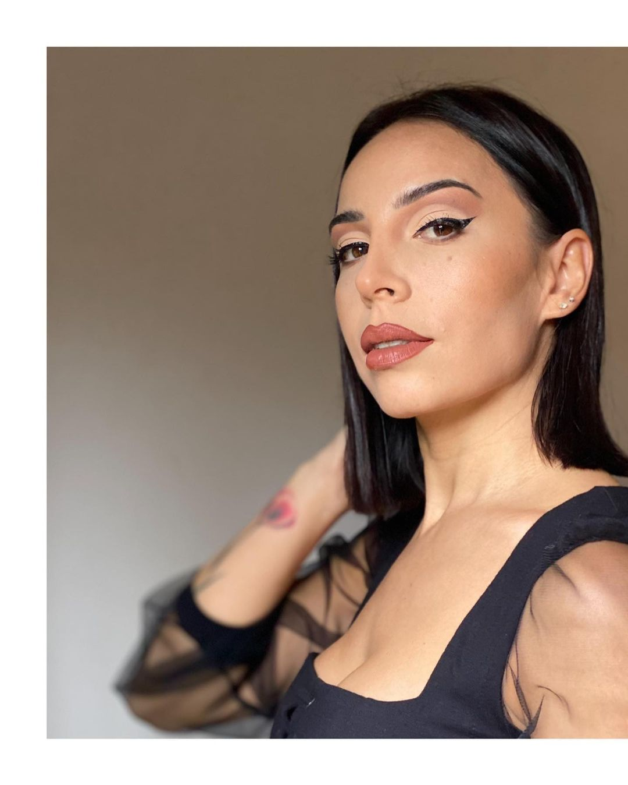
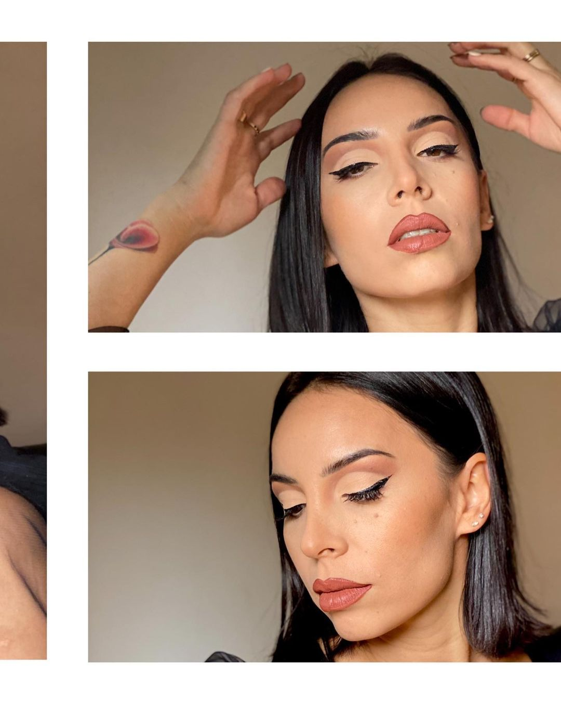
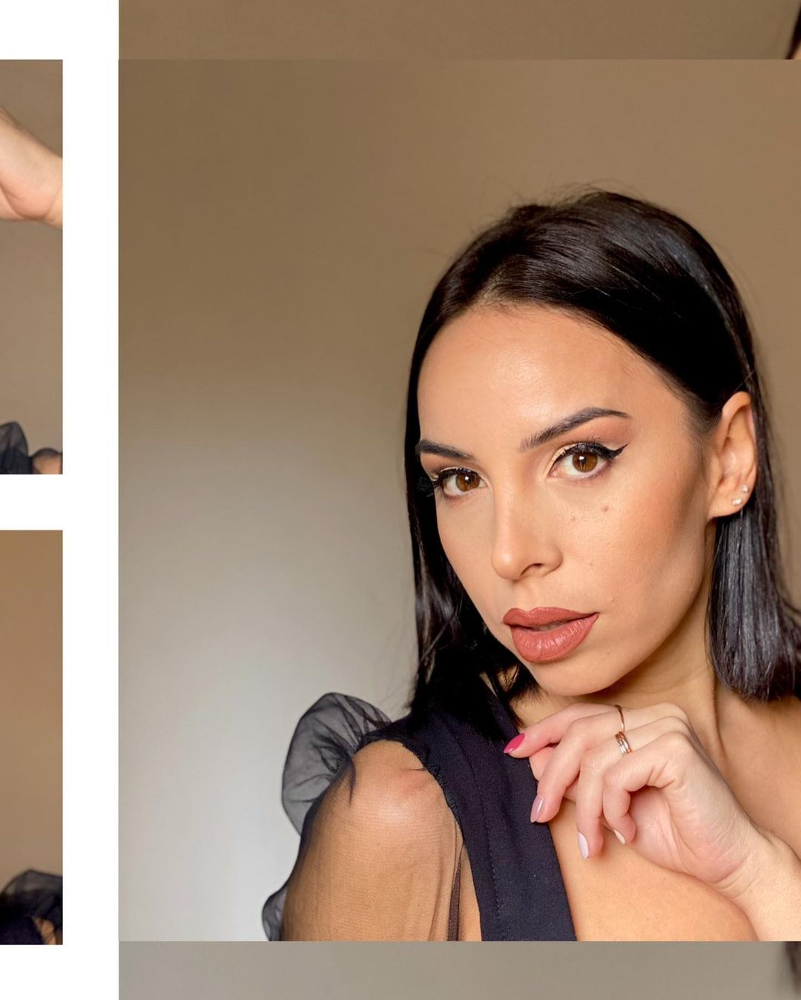

Yanina Bustos
Descubre un poco sobre mí...

Soy Yanina Bustos, maquilladora profesional, apasionada por el maquillaje que empodera.
Mi objetivo es ayudarte a lucir el maquillaje que has soñado para el día de tu boda, enseñarte a maquillar ó juntas elegir el look que lleve tu impronta y estilo para ese evento tan importante
Me encuentro en la constante busqueda del perfeccionamiento de mi trabajo como maquilladora para así poder brindarles a mis clientes, el mejor servicio.

Me encuentro en la constante busqueda del perfeccionamiento de mi trabajo como maquilladora para asi poder brindarles a mis clientes, el mejor servicio.
